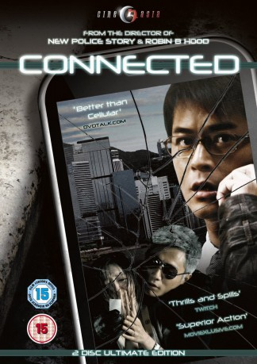

#5273 Connected
 
 IMDB-Wertung: 6.6 / 10
IMDB-Wertung: 6.6 / 10  Metascore: 0
Metascore: 0 
Schuldeneintreiber Bob ist gerade auf dem Weg zum Flughafen, als sein Handy klingelt. Die panische Frau an der anderen Leitung behauptet, sie sei das Opfer einer Entführung. Bob hält den Anruf zunächst für einen üblen Scherz, doch als er der Unbekannten bei einem Gespräch mit ihrem Peiniger zuhört, wird ihm klar, dass er für sie die vermutlich letzte Hoffnung ist - und handeln muss...
Jahr: 2008
Dauer: 110 Minuten
FSK: 16
Land: China Studio: Koch MediaTonspuren: DTS - ,
Untertitel: Deutsch,
Auflösung: 1080p (1920x816) Größe: 9850 MB
Genre: Action
Regisseur: Benny Chan
Drehbuch: Thomas Bidegain
Soundtrack:
Darsteller:
 Louis Koo als Bob
Louis Koo als Bob- Barbie Hsu als Grace Wong
- Nick Cheung als Detective Fai
- Ye Liu als Senior Inspector Fok
 Siu-Wong Fan als Tong
Siu-Wong Fan als Tong Siu-Fai Cheung als Detective Cheung
Siu-Fai Cheung als Detective Cheung- Beibi Gong als Jen
- Ankie Beilke als Michelle
- Cho-Lam Wong als Phone Shop Customer Service Rep
- Raymond Ho-Yin Wong als Boss
- Daniel Whyte als Daniel
- Carlos Chan als Roy Wong
- Flora Chan als Jeannie
- Cheuk-lap Hung als Joe
- Ying Kwan Lok als Headmaster
- Vincent Kok als Man in the Convertible
- Zuyang Sun als Detective Sin
- Robbin Harris als Robbin
- David Rock als Rock
- Moon Moon Chan als Tinker Wong
- Tam Chun Ho als Kit Kit
- Shayne May L. Avenido als Maria
- Fong Chi-Kui als Detective Cheung's Team
- Kai Kit Lee als Detective Cheung's Team
- Charis Chung als Detective Cheung's Team
- Jack Wai-Leung Wong als Jack
- Ping-Kuen Lai als Medical Examiner
- Simon Watkiss als Murder Druglord
- Christian Kila als Murder Druglord
- Michael Abbort als Murder Druglord
- Smith Yan Paul als Murder Druglord
- Hoi-Lan Lee als Nurse
- Snow Suen als Nurse
- Tin Chi Law als Plainclothes Detectives
- Yat Wa Ho als Plainclothes Detectives
- Coson als Plainclothes Detectives
- Wai-Kai Law als Convict
- Toby als Convict
- Wai-Tim Mak als Debt Collector
- Kim-Wing Lee als Debt Collector
- Radford Cheung als Debt Collector
- Wai-Hung Ching als Debt Collector
- Ying-Kit Chan als Debt Collector
- King-Tin Lai als Debt Collector
- Man Shing Wong als Debt Collector
- Gloria Hung als Chen Choi's Wife
- Man-Lok Kwok als Chen Choi's Son
- Ngai Ngai als Baby Chen
- Terence Tsui als Man in the Car
- Angela Yiu als Woman in the Car
Datei: X:\HD-Eastern-Modern(A-M)\Connected (2008, FSK16, 1920x816).mkv seit 09.01.2017
Festplatte: HD Eastern+Western
 Es gibt insgesamt 104 Filme in der Gruppe 'HD-Eastern-Modern(A-M)'
Es gibt insgesamt 104 Filme in der Gruppe 'HD-Eastern-Modern(A-M)'